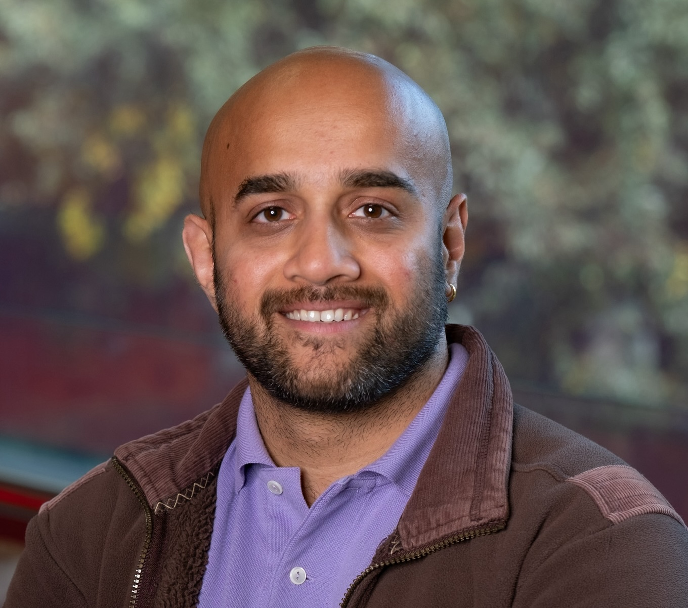
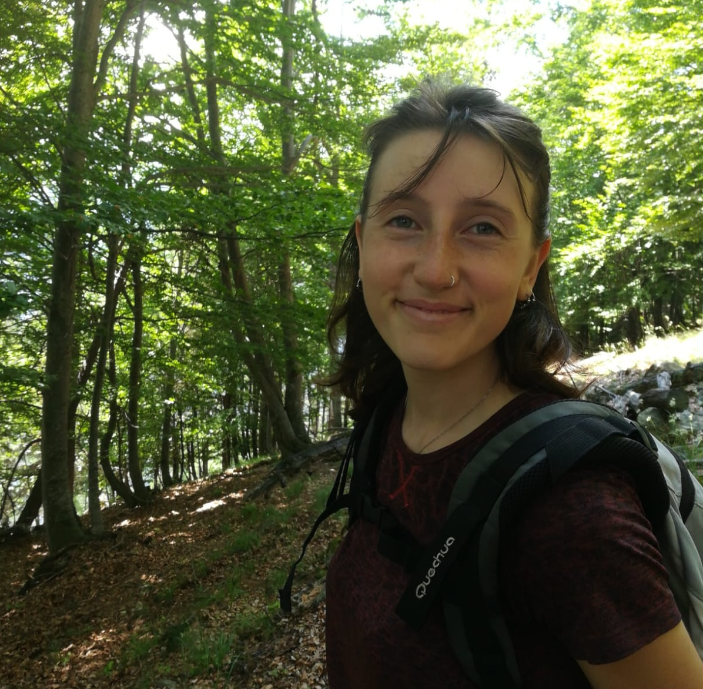
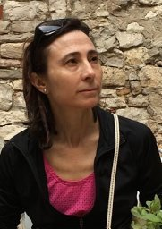
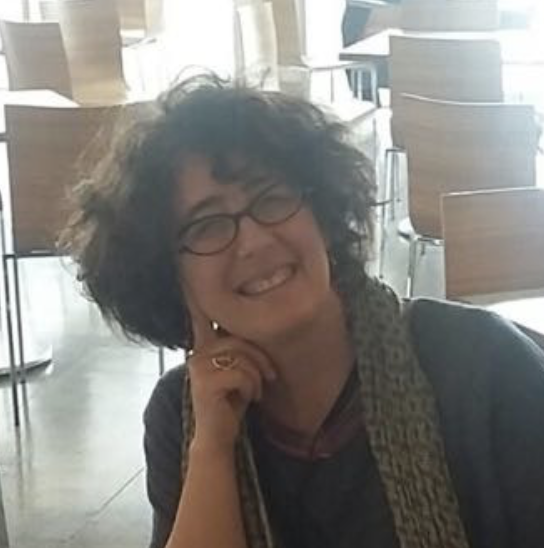

Community-based approaches:
Highlighting challenges and limitations of community-based NLP, proposing new approaches, frameworks, and directions across different research fields.
COLING 2027 · Macau, China · May 9-14, 2027
First Ask Then Act
1st Workshop on Community-Based and Socially Aware Approaches to Natural Language Processing
1 / About
The FATA workshop promotes an interdisciplinary perspective that connects AI, NLP, and language studies with human-centered approaches, bringing together researchers and practitioners from NLP, linguistics, social sciences, and ethics.
It highlights community-based and participatory methods that recognize underrepresented communities and low-resources language speakers as essential stakeholders and knowledge holders throughout the research process.
Through interdisciplinary dialogue, FATA aims to advance responsible, transparent, and equitable language technologies that are socially grounded and responsive to diverse communities’ needs.
2 / Submissions
We invite contributions that advance discussion on community-based and socially aware approaches to Natural Language Processing.
The workshop invites submissions of both long (up to 8 pages) and short papers (up to 4 pages) including position papers, negative-result papers, datasets, system demos, and resource papers.
Submission link will be announced here.
Topics of interest include, but are not limited to:
Highlighting challenges and limitations of community-based NLP, proposing new approaches, frameworks, and directions across different research fields.
Exploring collaborative data collection, crowdsourcing platforms, and limitations of current annotation practices. Presenting future directions on the role of linguistic technologies in mitigating bias in data collection and annotation.
Investigating how the intersections of different identities and perspectives can be integrated into computational linguistics research, with particular attention to their implications for bias, exclusion, and marginalization.
Exploring how schemas, guidelines, and tools can better represent and emphasize diversity while maintaining annotation quality and consistency.
Welcoming interdisciplinary contributions bringing together linguistics, sociology, computer science, and related disciplines to explore how these methodologies can be effectively integrated into NLP research.
3 / Schedule
Please check this page for updates on the workshop schedule and invited contributions.
4 / Planning
Deadline for paper submissions.
5 / People

School of Computer Science and Engineering
University of New South Wales (Australia)



6 / Get in touch
For questions about the workshop, submissions, or collaboration, please contact the organising team.
Contact email to be announced.